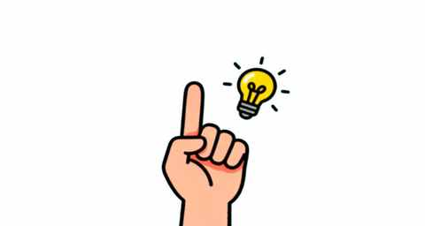
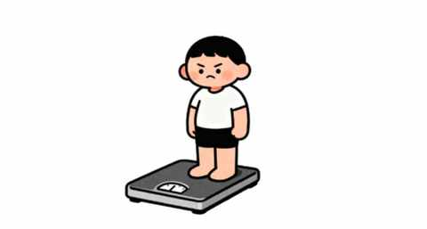
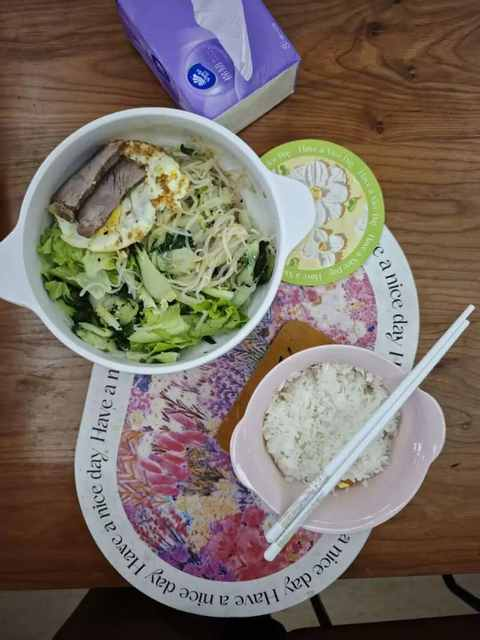
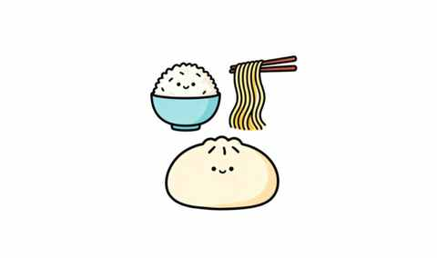
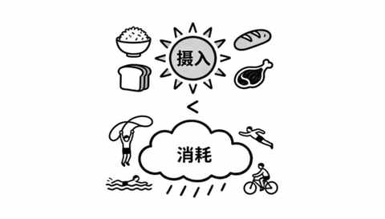
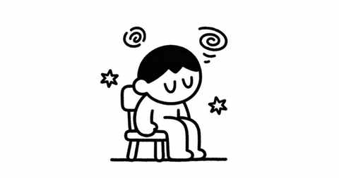

中年减肥成功2年后，才发现这5个坑当初要是有人点醒我该多好！
一、不踩坑是不可能的
说是踩坑，其实主要还是当时减肥的时候陷入到一些误区，没有把时间和精力用在对的地方。
在对一件事认真有限的情况下去做的时候，不踩坑是不可能的，因为在执行中的细节太多太多。
在两年后的今天，我可以感叹当初要是有人点醒我该多好，但很可能当时已经有人在点我了，而当时的我浑然不知。

今天把当初踩的几个坑总结出来，希望能给大家提个醒，做个反面案例。
二、这 5 个坑不容小觑
1️⃣ 过度在意体重易焦虑
曾经有那几个月，每天早中晚都称一次体重，甚至有时候运动完回来还没补水也称重看流了多少汗。

既然是减肥，必然要知晓体重的波动情况，但一天称太多次实属没有必要，甚至能让人焦虑，特别是某一天吃的比较多的时候。
这种时候很不想上秤但又很想知道当时的体重增加多少，真的是给自己徒增烦恼，倒不如接下来几天多动动，再结合清淡点饮食把体重降下来。

特别要注意的是：
在高强度运动后或吃的比较重口后身体会储水，在这之后 1-2 天的体重很大可能会增加几斤，具体因人而异。
正确的方式是：
前期：每天早上排空后称体重，让自己能根据体重的变化去回顾头一天吃的什么。
中后期：一周一次即可，可安排在周六或周日的早上，能整体回顾一周的饮食和运动情况从而知晓接下来怎么继续降体重。
2️⃣ 低 碳饮食不可取
我们普通人减肥完全不需要低碳饮食，相反我们很需要碳水。
如果我们日常主要吃的碳水就是米面馒头之类的，突然为了减肥就视碳水为洪水猛兽而吃的很少，前期是能靠意志力撑住但是到后期难免会暴饮暴食，而且会把没有吃的成倍吃回来。

反而是保持充足的碳水摄入，才能让我们的情绪更稳定，减小暴饮暴食的可能性。
还有另一个不容忽视的要点，如果碳水摄入量猛然降低，会让人看起来皮肤状态不好也会更显老。
低碳饮食还是更适合对低体脂率有追求或碳水吃多了容易晕碳的人们。
3️⃣ 热量缺口不是越大越好
热量缺口最简单的解释就是消耗的热量比吃的热量多。

经常减肥的人谁能没想过让热量缺口尽量大呢，但热量缺口可不是越大越好。
我们不能忽视我们的身体，因为我们的身体是极其复杂且敏感的，一旦有任何超出其阈值的风吹草动就能触发身体的自我保护机制。
很可能会出现你在昨天结合运动和饮食创造了 1000 大卡的热量缺口，但是第二天早上称重的时候发现体重丝毫没有变化，甚至还会上升！
建议先从早餐或晚餐的量减半开始尝试，先放在固定的某一餐能更好的对热量缺口的创造有一个清晰的认识，久而久之便能知晓什么样的创造热量缺口的方式是最适合自己长期执行的。
4️⃣ 睡眠不足负面影响大
晚睡几乎是现代人无法避免的一个客观情况，但如果希望减肥的效果来的好一些，睡眠充足几乎是必须的。
先不管深度睡眠时间和比例，我们每天至少要保障 7 小时的睡眠时间，如果每天有午休习惯的，也可以加上午休的时间。

因为睡眠是否充足会直接决定一个人当天的状态，当数次是在睡眠不足的情况下开启新的一天，大概率每天都是没有力气运动，也不会想去控制饮食，就想吃点爱吃的爱喝的。
仅需几天的时间，便能把几周减掉的体重给找回来，可能还回来再多一点点。
5️⃣ 不补知识盲区 走弯路
在减肥的过程中太容易遇到知识盲区。
在这个过程中，往往我们都会先通过各个平台去检索我们遇到的问题，但同一个问题有 1000 个博主都聊到了，然后有超多的解法同时都讲的很有道理。
从博主的角度出发，他所讲的解法是对的，对于他而言应该也是实践过的，但人和人的差异性在减肥上面极其明显。
例如：
- 有的人胖的时候最后胖脸，减肥的时候反而最先瘦脸，你说这种情况找谁说理去
- 有的人适合A 运动减肥，效果显著，进行 B 运动的效果就特别差
- ……
在减肥的同时一定要同步的去补齐对应的知识短板，要了解相关的常识，这样在遇到各种缤纷复杂信息的时候能有自己准确的判断。
强烈推荐这本讲吃的书《你是你吃出来的》，能让你对吃什么怎么吃有一个基础的认知。
作者曾是北京三甲医院营养科的 主任医师，书中有丰富的案例可供学习和参考 。
三、中年人减肥不易
中年人减肥的时候会不断的明确一个残酷的真相：
自己早就不是 20 多岁的年轻人了！
以往的习惯、心态和做事风格都需要一点点的调整，中年人减肥不易的另一个点是在于，在过程中我们能愈加感知到这是一个会长达 3-6 个月时间的征程。
同时，更难的是即使减肥成功了之后，要及时收心 守住来之不易的减肥成果！
希望我的这些经历，能帮你少走一点弯路。如果你也在减肥路上有过类似的踩坑经历，欢迎在评论区分享出来，我们一起把这条路踏得更宽、更平。
近期文章
中年减肥成功2年后，才发现维持体重靠的不是毅力，而是这5个微习惯
一个中年男人消费观的 3 个转变
8年驾龄复盘：新手期的每一次手忙脚乱，都成了现在我安全驾驶的“肌肉记忆”
一个中年人的2025年桐庐半马赛后复盘：我的 5 个收获
一个中年男人的140次发文，换来第一篇的10万+
为什么说放弃Apple Watch很容易，而真正考验人的是下一块智能手表的选择？
运动后总酸痛？这4个家常小物件，是放松肌肉的“隐形神器”
我的电车购买逻辑：用100kWh大电池的“确定性”，替代三电优化的“不确定性”
从前，有一个笨小孩，他的武器叫“笨功夫”
中年人提高跑量的意外之喜：最大摄氧量首次突破62！